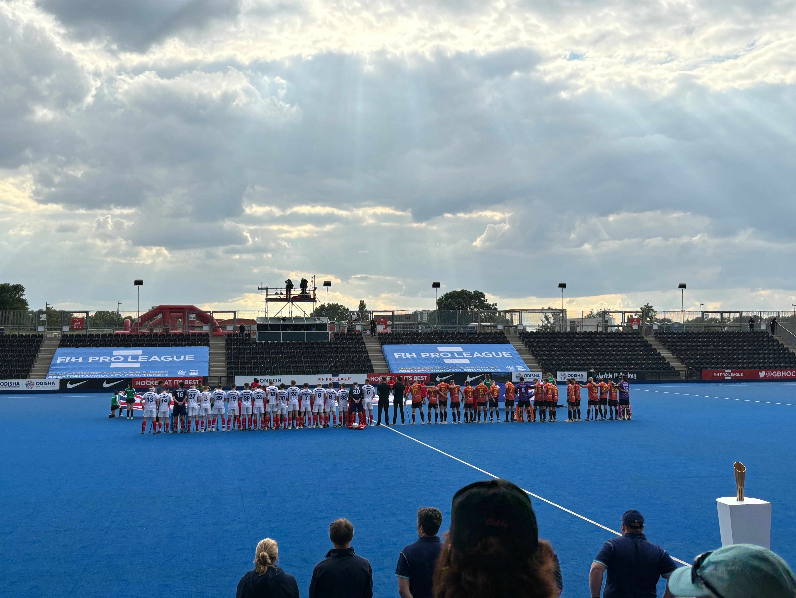
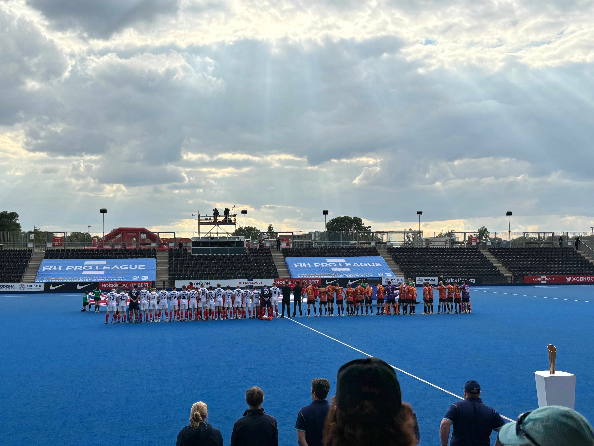
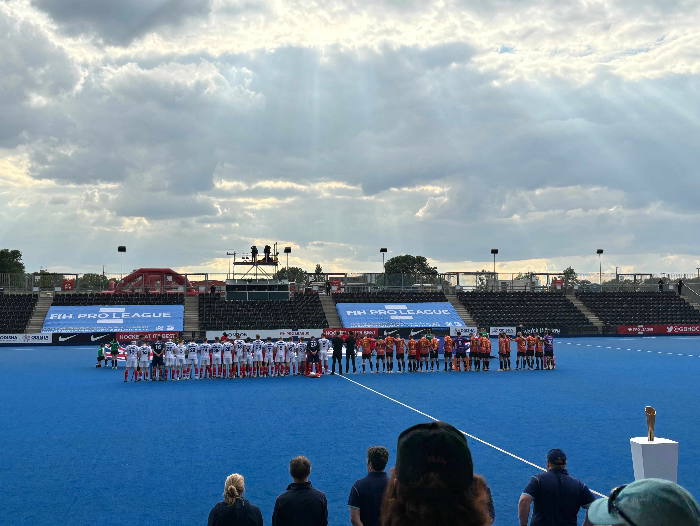

some hockey pics bc why not
 


i was introduced to field hockey after i moved to england at the age of 9. at that time, i did not have any particular interest towards hockey, and could not care less. now i spend 12 1/2 hours on it every week and am aspiring to play at the olympics. what changed?
i have no idea either.
it might have been because i was finally succeeding at something, or that i found it fun compared to swimming which i have done since i was 3. hockey is a team sport, and playing with my friends - winning together, losing together - really built team spirit. i enjoyed that instead of swimming's brutal 'you are competeing against your past self'.
after quitting full time swimming (8 times a week including morning training!) i focused all my energy on hockey. i am now in county, ta, u16 tier 1, womens 5's, and playing for my school u16 team.
making it this far was something little me would of never expected, and hoopefully i keep improving and fufill my dream of playing at the olympics one day.
all i know is never give up on your dreams(inspiring i know) and just keep going.
